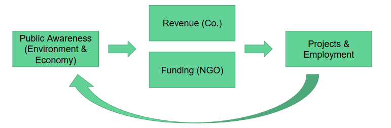
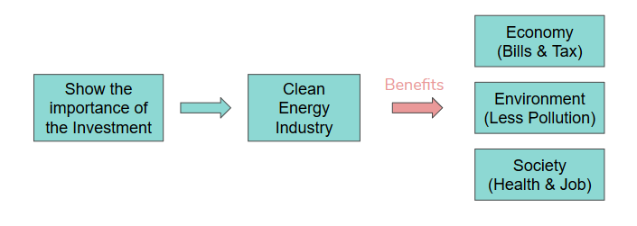

Our dashboard is aiming at the data analysis associated with clean energy use. By analysing the trend and relationship among the investment in clean energy, air quality and green power generation, we want to indicate the advantages of using clean energy and contribute in drawing fundings and public attention to the clean energy industry during and after COVID-19 pandemic.
According to the Sustainable Development Scenario developed by the International Energy Agency (IEA), the global projection for renewable energy is to achieve a share of 49% in the power generation by 2030. As the share of renewables in electricity generation was 27% in 2019, it can be seen that there is still a lot to be improved in the next two decades to achieve the goal. Another fact is that according to the IEA, the average annual rise of the renewables in the past five years is 1% - 2%. Therefore, this requires the rate of annual capacity additions to at least maintain the current increasing rate [1]. However, the COVID-19 pandemic in 2020 is creating a challenge for clean energy progress. It is reported that organizations and companies associated with clean energy are suffering from reduced business activities and consequently reduced revenues. To make things worse, curtailment of funding and investment in clean energy is seen in many countries as governments and companies are paying more attention to traditional energy sources which they think are more mature during this time. As a result, organizations and companies have to pause the recruitment plan to save expenses [2]. In addition to the economic reduction, clean energy organizations are also suffering from reduced communication opportunities with other communities including face-to-face education and publicity programs. These paused public activities and improved air quality during this time are to some extent awakening the public awareness of clean energy which is also the pain point mentioned in some NGO feedback we collected for this project. The first picture here shows the ranking of user needs and pain points of stakeholders according to the responses we have collected from the clean energy companies and organizations such as PennEnvironment. As organizations and companies are facing the problems of reduced public awareness, cut revenues and employment, we want to address these problems by indicating the economic and environmental advantages of using clean energy.
Our Problem statement is that we plan to use data analysis tools to increase awareness regarding the need to incorporate clean energy in industries, in the meanwhile, convey the economic benefits of using clean energy post COVID-19 pandemic to the government and companies relying on non-renewable energy sources. The data analysis in this problem statement currently focuses on the historic data visualization, trend analysis and the indication of relationships among green power generation, air quality and investment in clean energy. The goal is to show the importance of investment in clean energy for improving the air quality.
The right side of the second picture is the three benefits of using clean energy. Using clean energy not only could help reduce energy bills of buildings and could also draw the tax credits or fundings provided by governments. Also, by creating less pollution associated with energy use, the clean energy could also benefit air quality which furtherly will mitigate the public health problems associated with polluted air. Clean energy also contribute to society by creating more jobs, especially in countries that still rely on traditional energy.
[1] IEA. Tracking Power 2020. https://www.iea.org/reports/tracking-power-2020/renewable-power#abstract
[2] Rachel Mcdevitt. (May 29, 2020). PA DEP Faces Flat Funding to Start Next Fiscal Year. Retrieved June 28, 2020, from https://www.alleghenyfront.org/pa-dep-faces-flat-funding-to-start-next-fiscal-year/